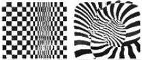
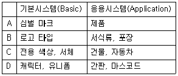
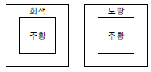
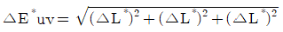
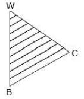

컬러리스트산업기사 (2013-08-18 기출문제)
1과목: 색채심리
1. 동·서양을 막론하고 권력의 상징과 기호로 주로 사용되었던 색이 아닌 것은?
- 푸른색
- 붉은색
- 황금색
- 자색
(정답률: 알수없음)

2. 색채조절의 올바른 예가 아닌 것은?
- 피로를 덜기 위해 공통점이 많은 배색으로 하는 것이 좋다.
- 식욕촉진을 위해서는 선명한 톤의 주황, 빨강, 노랑 등으로 연출한다.
- 공장이나 사무실의 천장색은 바닥보다 어두운 것이 적합하다.
- 럭셔리한 공간 연출을 위해서는 밝은 보라나 금색으로 연출한다.
(정답률: 67%)
3. 색채심리에 관한 설명이 틀린 것은?
- 색채감각은 물체의 속성이 아니라 시신경계에서 결정된다.
- 빛의 물리적 특성이 달라지더라도 우리의 색채감각은 변하지 않고 일정하게 유진된다.
- 색채에 대한 정서적 경험은 개인의 생활양식이나 문화적인 배경에 영향을 받는다.
- 색채는 대상의 윤곽과 실체를 파악하는데 유용한 정보를 제공하지 않는다.
(정답률: 알수없음)
4. 브랜드 관리 과정이 옳게 나열된 것은?
- 브랜드 설정 → 브랜드 파워 → 브랜드 이미지 구축 → 브랜드 충성도 확립
- 브랜드 설정 → 브랜드 이미지 구축 → 브랜드 충성도 확립 → 브랜드 파워
- 브랜드 이미지 구축 → 브랜드 파워 → 브랜드 설정 → 브랜드 충성도 확립
- 브랜드 이미지 구축 → 브랜드 충성도 확립 → 브랜드 파워 → 브랜드 설정
(정답률: 알수없음)
5. 색채에 대한 이미지 연상과 가장 관련이 없는 것은?
- 색채의 한난감
- 자극도
- 기호성
- 잔상의 효과
(정답률: 46%)
6. 안전 표지면의 색으로 비상구, 비상계단 및 그 방향을 나타내는 색은?
- 빨강
- 노랑
- 파랑
- 녹색
(정답률: 84%)
7. 노란색과 철분이 많이 섞인 붉은색 암석이 성곽을 이루고 있는 곳에 위치한 리조트의 외관을 토양과 같은 YR계열로 색채디자인을 하였다. 이 때 디자이너가 고려한 것은?
- 강조색
- 다양성과 개성 중시
- 주거자의 특성고려
- 지역색 고려
(정답률: 82%)
8. 색채 수요의 상황과 색채 마케팅의 대응을 옳게 연결한 것은?
- 잠재적 수요 : 색채수요 유지
- 불규칙 수요 : 색채수요 개발
- 완전 수요 : 색채수요 확대
- 초과 수요 : 색채수요 감소
(정답률: 34%)
9. 색채 마케팅 전략에 직접적으로 영향을 미치는 환경요인으로 가장 거리가 먼 것은?
- 경제적 환경
- 기술적 환경
- 사회·문화적 환경
- 정치적 환경
(정답률: 알수없음)
10. 다음 중 사람의 식욕을 가장 돋우어 주는 색은?
- 5R 3/6
- 2.5YR 6/12
- 7.5RP 5/12
- 7.5PB 7/6
(정답률: 알수없음)
11. 땅의 색을 기반으로 지역색을 연구한 프랑스의 색채 연구가는?
- 비렌(Faber Biren)
- 랑클로(Jean-Philippe Lenclos)
- 먼셀(Albert H. Munsell)
- 오스트발트(Ostwald)
(정답률: 63%)
12. 몸의 피로를 풀어주고, 명쾌성은 부족하나 신선한 의욕의 감정을 연상시키는 색상은?
- 보라
- 파랑
- 흰색
- 초록
(정답률: 알수없음)
13. 다음 중 사회 문화에 따른 상징적인 색의 연결이 틀린 것은?
- 동양 문화권에서 신성한 색채 - 노란색
- 서양 문화권에서 장례식 - 흰색
- 기독교, 천주교 - 청색
- 서양 문화권에서 겁쟁이, 배신자 - 노란색
(정답률: 55%)
14. 색채의 상징성에 대한 설명이 적합하지 않은 것은?
- 노랑은 흰두교와 불교에서 신성시되는 색이다.
- 중국에서 노랑은 왕권을 대표하는 색이다.
- 북유럽에서 노랑은 영혼과 자연의 풍요로움을 표시한다.
- 일반적으로 국기에 사용되는 노랑은 황금, 태양, 사막을 상징한다.
(정답률: 84%)
15. 공장의 색채조절에 관한 설명으로 틀린 것은?
- 마음을 들뜨게 하거나 눈에 피로를 주는 강렬한 대비색은 피하는 것이 좋다.
- 위험한 부분은 주위를 집중시키고 식별이 잘되는 색으로 한다.
- 바닥을 밝게 하여 실내가 안정되어 보이도록 한다.
- 자연광을 받지 못하는 계단과 복도 등은 밝은 색조를 사용한다.
(정답률: 알수없음)
16. 다음 중 녹색에 어울리는 향은?
- 꽃(Floral)
- 사향(Musk)
- 박하(Mint)
- 장뇌(Camphor)
(정답률: 알수없음)
17. 색채선호와 상징에 대한 설명 중 틀린 것은?
- 연령별로 선호하는 색은 국가들마다 뚜렷한 차이를 보인다.
- 일조량이 많은 지역에서는 일반적으로 장파장의 색을 선호한다.
- 국가와 문화가 다르면 같은 색이라도 상징하는 내용이 다를 수 있다.
- 교육 정도가 높을수록 저채도를 좋아하는 경향이 있다.
(정답률: 60%)
18. 색채의 기능적 역할이 아닌 것은?
- 판별성 높임
- 작업성 향상 및 피로감을 줄임
- 경제성을 높임
- 시인성을 높임
(정답률: 70%)
19. 색채 마케팅에 관련된 설명 중 옳은 것은?
- 색채를 이용하여 소비자의 심리를 읽고 표현하는 분야로 인구 통계학적 자료와 경제적 환경변화로 인한 영향을 많이 받는다.
- 경기가 둔화되면 다양한 색상과 톤의 색채를 띤 제품을 선호하는 경향이 있다.
- 기업의 색채 마케팅 전략은 소비자 계층에 대한 정확한 파악 시 직관적이고 경험주의적 성향을 중요시한다.
- 색채 마케팅의 궁극적 목표는 다양한 색채를 이용한 제품의 차별화를 추구함에 있다.
(정답률: 50%)
20. 색과 관련된 공감각적 특성과 관련이 없는 것은?
- 단맛 - 빨강
- 쓴맛 - 흰색
- 건조한 느낌 - 난색
- 촉촉한 느낌 - 한색
(정답률: 알수없음)
2과목: 색채디자인
21. 디자인의 조건이 아닌 것은?
- 심미성
- 독창성
- 합목적성
- 조직성
(정답률: 84%)
22. 색채계획에 관한 설명 중 틀린 것은?
- 디자인의 목적에 부합하는 이미지에 따라 사용색을 설정한다.
- 배색의 70%이상 넓은 면적을 차지하는 색을 강조색이라 한다.
- 색채가 결정되는 과정에서 검토되어야 할 요소를 빠짐없이 검토할 수 있도록 체크리스트를 작성한다.
- 적용된 색을 감지하는 거리를 고려하여야 한다.
(정답률: 92%)
23. 시지각의 원리를 설명한 게슈탈트 요인이 아닌 것은?
- 유사성의 요인
- 인지성의 요인
- 폐쇄성의 요인
- 연속성의 요인
(정답률: 알수없음)
24. 다음 중 공간디자인의 영역에 속하지 않는 것은?
- 도시디자인
- 조경디자인
- 실내디자인
- 운송기기디자인
(정답률: 70%)
25. 단순한 기하학적 형태를 사용하며 이미지와 조형요소를 최소화하여 기본적인 구조로 환원시키고, 원형이나 정육면체 등의 단일 입방체 사용과 단색 사용 등으로 단순함을 강조한 디자인 사조는?
- 팝아트
- 옵아트
- 미니멀리즘
- 포스트모더니즘
(정답률: 알수없음)
26. 다음 중 색채계획의 결과가 가장 오래 지속되고 사후관리가 가장 중요시되는 영역은?
- 제품색채계획
- 패션색채계획
- 환경색채계획
- 미용색채계획
(정답률: 알수없음)
27. 그림과 가장 관련이 있는 현대디자인 사조는?

- 다다이즘
- 팝아트
- 옵아트
- 포스트모더니즘
(정답률: 알수없음)
28. CI(Corporate Identity)의 개념으로 틀린 것은?
- 기업의 자기 발견과 자기실현의 프로그램이며, 기업문화 자체이다.
- 아이덴티티 디자인 구축의 목적에서 기업 내 구성원의 결속과 화합을 우선하지는 않는다.
- 기존 이미지의 노후 또는 경쟁사보다 유리한 이미지를 만들어야 할 때 도입한다.
- 기업이나 기관의 최초 창립 및 설립 때, 기업 간 인수, 합병 등의 경영상 큰 변화가 있을 때 도입한다.
(정답률: 알수없음)
29. 건축물과 색의 선택이 부적합한 것은?
- 미술과 - 아이보리색
- 교실내부 - 연녹색
- 간이식당 - 복숭아색
- 체육관 - 붉은색
(정답률: 알수없음)
30. 대상을 연속적으로 전개시켜 이미지를 만드는 디자인 조형 원리는?
- 비례
- 균형
- 리듬
- 구도
(정답률: 알수없음)
31. 연상을 위한 키워드를 정하고 연상되는 것을 계속 노트하면서 테마에 연결시켜 콘셉트를 구하는 방식으로 진행하는 아이디어 발상법은?
- 체크리스트법
- 시네틱스
- 고든법
- NM법
(정답률: 28%)
32. 2⑤0년이 되면 한국의 노령 인구는 전체 인구의 40%에 이를 것이라고 예견되고 있다. 이와 같은 사회 현상에 대해 디자이너가 특히 고려해야할 성격의 디자인은?
- 유니버설 디자인
- 그린디자인
- 멀티미디어디자인
- 웹디자인
(정답률: 알수없음)
33. 서로 달라서 일견 관련이 없는 요소를 결합시킨다는 의미로 공통의 유사점, 관련성을 찾아내고 동시에 아주 새로운 사고방법으로 2개의 것을 1개로 조립하는 것을 목표로 하는 이미지 전개 방법은?
- 브레인스토밍
- 시네틱스
- 입출력법
- 체크리스트법
(정답률: 50%)
34. 전체 배색의 통일감을 주는 색으로 색채조화에서 이미지의 중심이 되는 상징적인 대표색은?
- 주조색
- 보조색
- 강조색
- 기조색
(정답률: 알수없음)
35. 광고 대행사 직원으로서 클라이언트(광고주)와 대행사의 사이에서 마케팅에 관계된 내용을 입안하고 클라이언트의 의도를 전하며, 중간 매개의 역할을 하는 직책은?
- AD(Art Director)
- AE(Account Executive)
- AS(Account Supervisor)
- GD(Graphic Designer)
(정답률: 알수없음)
36. 분야별 디자인에 관한 설명으로 잘못 연결된 것은?
- 스트리트퍼니처 디자인 - 버스정류장, 식수대 등 도시의 표정을 결정하는 중요한 역할을 한다.
- 옥외광고 디자인 - 기능적인 성격이 강하므로 심미적인 기능보다는 눈에 띄는 것이 가장 중요하다.
- 슈퍼그래픽 디자인 - 적은 비용과 간단한 방법으로 이미지를 탈바꿈시켜 환경개선이 가능하다.
- 환경조형물 디자인 - 공익목적으로 설치된 조형물로 주변 환경과의 조화, 이용자의 미적욕구충족이 요구된다.
(정답률: 47%)
37. CI(Corporate Identity)의 기본시스템과 응용시스템이 잘못 짝지어진 것은?

- A
- B
- C
- D
(정답률: 10%)
38. 형태와 기능을 분리시켜 보지 않고 포괄적 의미로 파악하여 복합기능이라고 규정한 사람은?
- 루이스 설리반
- 빅터 파파넥
- 윌리엄 모리스
- 모흘리 나기
(정답률: 알수없음)
39. 디자인 과정에 있어서 창의적이고 신선한 발상을 위한 생각과 습관으로써 가장 거리가 먼 것은?
- 남과 대화하기를 좋아하며, 비상식적인 면이 있어야 한다.
- 생각나는 것이 있으면 즉시 기록하고, 다양한 자료를 모은다.
- 선례를 중시하고, 따라하는 습관이 중요하다.
- 사고가 자유분방해야 하며, 생각을 집중해야 한다.
(정답률: 67%)
40. 사물, 행동, 과정, 개념 등을 나타내는 상징적 그림으로 오늘날 국제적인 스포츠 행사나 공항, 역에서 문자를 대신하는 그래픽 심벌은?
- CI(Corporate Identity)
- 픽토그램(Pictogram)
- 시그니처(Signature)
- BI(Brand Identity)
(정답률: 90%)
3과목: 섹채관리
41. 컴퓨터의 입출력 시스템 장치들은 각 장치의 특성과 설정에 따라 색이 서로 다르게 보여지므로 색온도, 감마, 컬러 균형 및 기타 특성 등을 조절하여 색상이 일정한 표준으로 나타나도록 하는 과정은?
- 컬러매칭(Color Matching)
- 리플렉션(Reflection)
- 캘리브레이션(Calibration)
- 컬러모듈(Color Module)
(정답률: 알수없음)
42. 염색물의 일광견뢰도란?
- 염색물이 태양광선 아래에서 얼마나 습도에 견디는지를 그래프로 나타낸 것
- 염색물이 자연광 아래에서 얼마나 변색되는가를 나타내는 척도
- 염색물이 세탁에 의하여 얼마나 탈색되는가를 나타내는 정도
- 염색물이 습기와 온도에 의하여 얼마나 변색되는가를 평가하는 척도
(정답률: 알수없음)
43. 착색력이 우수하고 색상이 선명하며 인쇄잉크, 도료, 섬유 수지날염, 플라스틱 착색 등에 이용되는 것은?
- 유기안료
- 무기안료
- 전색제
- 염료
(정답률: 알수없음)
44. 구름이 얇고 고르게 낀 상태에서 태양광 색온도는?
- 12000K
- 9000K
- 6500K
- 2000K
(정답률: 40%)
45. 일반적으로 안료를 이용하여 채색되는 예로서 적합하지 않은 것은?
- 의류
- 가전제품
- 건축물
- 인쇄물
(정답률: 67%)
46. 다음 중 측색 시 측정방식에 따라 결과가 크게 다르고, 같은 측색방식에서도 시료를 놓는 위치에 따라 차이가 많이 나는 것은?
- 형광 페인트
- 메탈릭 페인트
- 천연 페인트
- 수성 페인트
(정답률: 50%)
47. 조명 및 수광의 기하학적 조건 중 적분구를 사용하여 빛을 모든 각도에서 시료의 표면에 입사시키고, 광검출기를 시료의 법선에 대하여 8°기울여서 측정하는 방식은?
- 확산 : 8°, 정반사 성분 포함
- 확산 : 8°, 정반사 성분 제외
- 8°: 확산, 정반사 성분 포함
- 8°: 확산, 정반사 성분 제외
(정답률: 알수없음)
48. 표준광 C에 대한 옳은 것은?
- 상관색 온도가 약 6504K로 주광으로 조명되는 물체를 표시할 경우에 사용
- 상관색 온도가 약 4874K로, 형광을 발하는 물체색의 표시에는 사용하지 않음
- 상관색 온도가 약 2856K로, 백열전구로 조명되는 물체색을 표시할 경우에 사용
- 상관색 온도가 약 6774K로, 형광을 발하는 물체색의 표시에는 사용하지 않음
(정답률: 알수없음)
49. 물체의 표면에 안료를 착색시키기 위해 사용하는 전색제로 이용되지 않은 것은?
- 아마인유
- 니스
- 아라비아고무
- 호분
(정답률: 28%)
50. 다음 중 CCM의 반사값을 읽어내는 데 가장 적합한 파장의 범위는?
- 260~620nm
- 380~780nm
- 450~890nm
- 640~950nm
(정답률: 알수없음)
51. 색은 환경에 따라서 변한다. 즉, 색이 있는 사물은 그 사물이 있는 주변 환경 특히 빛에 영향을 많이 받는다. 이러한 원인으로 가장 관련이 없는 것은?
- 광원의 분광분포 특성
- 광원의 연색성
- 광원의 광속
- 광원의 색온도
(정답률: 54%)
52. 광원에 대한 설명이 틀린 것은?
- 낮은 색온도는 따뜻한 색에 대응되고 높은 색온도는 시원한 색에 대응된다.
- 주광색 형광등은 연색성이 낮아 병원 복도, 경기장 조명, 식료품 매장 등에 적합하다.
- 인공 광원이 얼마나 기준광과 비슷하게 물체의 색을 보여 주는가를 나타내는 것이 연색지수이다.
- 백열등과 같이 뜨거워져서 빛을 내는 열광원은 흑체의 색온도로 구분하고 열광원이 아닌 경우에는 상관 색온도로 구분한다.
(정답률: 알수없음)
53. 염료의 종류 중 분말 상태로 찬물이나 더운물에 간단하게 용해되고 혼색이 자유로워 손쉽게 사용할 수 있는 장점이 있으며 세탁이나 햇빛에 약한 단점이 있는 염료는?
- 염기성염료
- 직접염료
- 산성염료
- 반응성염료
(정답률: 30%)
54. 다음 중 스캐너의 기능은?
- 영상입력 기능
- 제어장치 기능
- 연산장치 기능
- 영상출력 기능
(정답률: 알수없음)
55. 모니터의 색온도 조정에서 자연에 가까운 색을 구현하기 위해서 설정해야 하는 색온도는?
- 6500K
- 8500K
- 9300K
- 9900K
(정답률: 알수없음)
56. 색채와 조명에 관한 과학과 기술의 연구를 목적으로 하는 국제단체는?
- ISO(International Standard Organization)
- NIST(National Institute of Standards and Technology)
- CIE(Commission Internationale de l'Eclairage)
- ICC(International Color Consortium)
(정답률: 70%)
57. MI(Metamerism Index)를 평가하기에 적합한 광원으로 묶인 것은?
- 표준광 A, 표준광 D65, 표준광 C
- 표준광 D45, 표준광 D65, CWF-2
- 표준광 A, 표준광 B, 표준광 C
- 표준광 A, 표준광 B, FMC II
(정답률: 알수없음)
58. 색채 영상을 입력하거나 생성된 색채 영상을 디스플레이 하는 디지털 색채의 기본 요소가 아닌 것은?
- 빨강
- 녹색
- 노랑
- 파랑
(정답률: 알수없음)
59. 다음 중 CCM과 관련이 없는 것은?
- 감법혼색
- 측정반사각
- 흡수계수와 산란계수
- 쿠벨카 문크 이론
(정답률: 알수없음)
60. CMS에서 어떤 컬러 데이터를 변환(Convert)할 때 소스색공간이 목적지 색공간에 모두 포함될 경우 가장 정확한 매칭을 위해 다음 중 어떤 렌더링 인텐트를 사용해야 하는가?
- 인지적 렌더링 인텐트
- 채도 렌더링 인텐트
- 상대색도계 렌더링 인텐트
- 절대색도계 렌더링 인텐트
(정답률: 알수없음)
4과목: 색채지각의이해
61. 그림과 같이 동일한 주황의 색이 배경에 따라 다르게 보이는 것과 관련한 색의 대비는?

- 명도대비
- 채도대비
- 색상대비
- 보색대비
(정답률: 알수없음)
62. 색의 지각 및 감정효과에 대한 설명이 틀린 것은?
- 색채에 의한 중량감은 주로 명도에 의해 좌우된다.
- 밝은 색을 상부에, 어두운 색을 하부에 배색하면 안정감을 얻을 수 있다.
- 색상대비는 1차색끼리는 잘 일어나지 않는다.
- 명도가 다른 두 색을 배색하면 밝은 색은 더 밝게 어두운 색은 더 어둡게 보인다.
(정답률: 알수없음)
63. 세 가지 색광을 사용하여 혼합색을 만들 경우, 가장 다양한 색상을 만들어낼 수 있는 세가지 색광은?
- 빨간색빛, 녹색빛, 노란색빛
- 빨간색빛, 노란색빛, 파란색빛
- 빨간색빛, 녹색빛, 파란색빛
- 노란색빛, 녹색빛, 파란색빛
(정답률: 64%)
64. 가시광선의 빛 가운데 빨간색으로 보이는 파장은?
- 350nm
- 450nm
- 550nm
- 650nm
(정답률: 알수없음)
65. 중간혼색에 관한 설명 중 틀린 것은?
- 색을 인접되게 배치하여 혼합된 색으로 보이게 하는 것이다.
- 컬러인쇄는 중간혼색을 사용한다.
- 색료의 혼합으로만 만들 수 있다.
- 중간혼색의 예로 베졸드 효과를 들 수 있다.
(정답률: 알수없음)
66. 선글라스를 끼고 있어도 익숙해지면 본래의 물체색으로 느껴지는 것은?
- 암순응
- 명순응
- 색순응
- 무채순응
(정답률: 40%)
67. 회색바탕에 검정 선을 그리면 바탕의 회색은 더 어둡게 보이고, 하얀 선을 그리면 바탄의 회색이 더 밝아 보이는 것과 관련한 것은?
- 메카로 효과
- 페히너 효과
- 푸르킨예 현상
- 베졸드 효과
(정답률: 알수없음)
68. 명소시와 암소시의 중간 정도의 밝기에서 추상체와 간상체 모두 활동하고 있는 시각상태는?
- 잔상시
- 유도시
- 중간시
- 박명시
(정답률: 80%)
69. 다음의 색에 대한 설명 중 나머지 보기와 다른 색을 설명하고 있는 것은?
- Cyan + Magenta의 감법혼색에서 나타난다.
- 이성, 침착의 연상언어를 가진다.
- 450 ~ 500nm의 파장영역에 해당된다.
- 온도감이 없는 중성색이다.
(정답률: 40%)
70. 색상대비에 대한 설명이 옳은 것은?
- 빨강 위의 주황색은 노란색에 가까워 보인다.
- 색상대비가 일어나면 배경색의 방향으로 색이 가까워져 보인다.
- 어두운 부분의 경계는 더 어둡게, 밝은 부분의 경계는 더 밝게 보인다.
- 검정색 위의 노랑은 명도가 더 높아 보인다.
(정답률: 37%)
71. 색의 혼합에 대한 설명이 틀린 것은?
- 가산혼합은 빛의 색을 서로 더해서 점점 밝아지는 원리는 이용한 혼색 방법이다.
- 감산혼합은 색을 더할수록 점점 탁하고 어두워진다.
- 병치혼합은 시간의 차이를 두고 두 색을 번갈아 볼 때, 색의 차이를 구분하지 못하고 다른 색으로 인식된다.
- 회전혼합은 2가지 이상의 색자극을 반복시키는 계시혼합의 원리에 의해 색이 혼합되어 보인다.
(정답률: 알수없음)
72. 다음 중 자연광 아래에서 같은 크기일 때 색의 명시도가 가장 낮은 것은?
- 검은 바탕 위의 노란 글씨
- 노란 바탕 위의 녹색 글씨
- 흰 바탕 위의 파란 글씨
- 파란 바탕 위의 흰 글씨
(정답률: 37%)
73. 경영색에 대한 설명이 옳은 것은?
- 금속표면에 나타나는 색
- 거울과 같은 광택 면에 비친 대상물의 색
- 조개껍데기 안쪽에 나타나는 무지개 색
- 물위 혹은 기름 표면에서 보여지는 색
(정답률: 알수없음)
74. 콘서트에서 리듬이 강하고 빠른 곡을 부르는 단계에 적합한 가수의 무대의상 색은?
- 연보라
- 빨강
- 회색
- 녹색
(정답률: 93%)
75. 색채의 양적 대비라고도 하며, 동일한 색이라도 크기가 커지면 명도와 채도가 증가되어 더욱 밝고 채도가 높아져 보이는 현상은?
- 명도대비
- 채도대비
- 보색대비
- 면적대비
(정답률: 80%)
76. 다음 중 눈의 구조와 기능에 대한 설명으로 틀린 것은?
- 각막과 수정체는 빛을 굴절시킨다.
- 홍채는 눈으로 들어오는 빛의 양을 조절한다.
- 망막은 수정체를 통해 들어온 상이 맺히는 곳이다.
- 망막에서 상의 초점이 맺히는 부분을 맹점이라 한다.
(정답률: 59%)
77. 다음 중 가장 진출되어 보이는 색은?
- 노랑
- 파랑
- 녹색
- 보라
(정답률: 알수없음)
78. 빛을 받아들이는 투명한 창문 역할을 하는 눈의 구조는?
- 공막
- 맥락막
- 각막
- 망막
(정답률: 50%)
79. 다음 색의 경연감에 대한 느낌 중 부드럽게 느낄 수 있는 조건은?
- 채도가 낮고 명도가 낮은 색
- 채도가 낮고 명도가 높은 색
- 중명도가 차가운 색
- 채도가 높은 한색 계통의 색
(정답률: 알수없음)
80. 직물제도에서 시작되어 인상파 화가들이 회화기법으로 사용하면서 일반화된 혼합은?
- 가법혼합
- 감법혼합
- 회전혼합
- 병치혼합
(정답률: 73%)
5과목: 색채체계의이해
81. 문·스펜서의 색채 조화론 설명이 아닌 것은?
- 균형 있게 선택된 무채색의 배색은 유채색에 못지않은 아름다움을 나타낸다.
- 동일 색상의 조화가 좋다.
- 색상과 채도를 일정하게 하고 명도만 변화시키는 경우 많은 색상을 사용했을 때보다 미도가 높다.
- 관찰자에게 잘 알려져 있는 배색이 잘 조화된다는 숙지의 원리를 바탕으로 한다.
(정답률: 알수없음)
82. 먼셀 색체계에 대한 설명으로 옳은 것은?
- 10색상을 기본으로 한다.
- 명도는 14단계로 구분한다.
- 채도는 11단계로 구분한다.
- 먼셀기호의 표기법은 HC/V이다.
(정답률: 50%)
83. 먼셀 색입체에서 채도에 대한 설명으로 틀린 것은?
- 5RP 색상의 채도값은 14로 가장 높다.
- 중심축에서 멀수록 채도는 높고, 가까울수록 낮다.
- 어떤 유채색에 무채색이 섞이면 채도값은 낮아진다.
- 도료의 발달 여부에 따라 채도의 최대수치가 변하게 되는 유동성을 갖는다.
(정답률: 알수없음)
84. 2색 이상의 색에 일정한 질서를 주어 리듬과 조화의 효과를 얻을 수 있는 배색으로 바둑판무늬나 타일 바닥면의 배색이 대표적인 것은?
- 반복 배색
- 까마이외 배색
- 포 까마이외 배색
- 분리 배색
(정답률: 알수없음)
85. 오스트발트 색체계의 색상환에서 기본색이 아닌 것은?(오류 신고가 접수된 문제입니다. 반드시 정답과 해설을 확인하시기 바랍니다.)
- Yellow
- Ultramarine Blue
- Green
- Purple
(정답률: 알수없음)
86. 다음 중 한국 전통색명 중 색상이 나머지와 다른 것은?
- 송화색(松花色)
- 명황색(明黃色)
- 두록색(豆綠色)
- 치색(緇色)
(정답률: 20%)
87. 배색 테크닉의 중요 포인트에 대한 설명 중 틀린 것은?
- 색의 명암, 농담, 강약을 반복하면 리듬감이 생긴다.
- 면적의 변화에 상관없이 배색 효과는 달라지지 않는다.
- 보색의 채도 차이를 뚜렷하게 하면 눈에 잘 띄는 배색이 된다.
- 탁색끼리, 순색끼리는 통일감이 있어 비교적 배색하기가 쉽다.
(정답률: 73%)
88. 문·스펜서 색채 조화론의 미도계산 공식은?
- M = O/C
- W + B + C = 100
- (Y/Yn) ＞ 0.5

(정답률: 알수없음)
89. 대조 톤의 배색에 해당되지 않은 것은?
- 명도차이를 강조한 배색
- 채도차이를 강조한 배색
- 색상차이를 강조한 배색
- 명도와 채도 모두 대조적인 배색
(정답률: 39%)
90. 다음 중 색채조화를 목적으로 일본색채 연구소에서 발표한 것은?
- DIN
- Munsell
- NCS
- P.C.C.S
(정답률: 80%)
91. 오스트발트의 동일색상면에서 사선이 의미하는 것은?

- 동일 흑색계열
- 동일 백색계열
- 동일 순색계열
- 동일 뉘앙스
(정답률: 42%)
92. 다음 중 관용색명이 아닌 것은?
- 적, 청, 흑, 황
- 살색, 쥐색, 상아색, 팥색
- 코발트블루, 프러시안블루
- 연한 회색, 어두운 녹색
(정답률: 알수없음)
93. 다음 중 노랑과 가장 가까운 색은? (단, CIE 색공간 표기임)
- a* = -40, b* = 15
- h = 180°
- h = 90°
- a* = 40, b* = -15
(정답률: 59%)
94. CIE L*a*b 색체계에 대한 설명으로 틀린 것은?
- 색도 좌표계의 중앙은 무색이다.
- CIE가 1976년 XYZ 모델에 기초하여 개량한 것이다.
- 색상과 톤의 개념으로 분류하여 체계화시켰다.
- L*는 명도, a*와 b*는 색도좌표를 나타낸다.
(정답률: 75%)
95. 다음 중 색에 대한 의사소통이 간편하도록 색이름을 표준화한 것은?
- 먼셀
- NCS
- ISCC - NIST
- CIE XYZ
(정답률: 64%)
96. ISCC-NIST 색이름 체계와 비교하여 한국산업표준에는 없는 유채색의 수식형용사는?
- vivid
- pale
- deep
- brilliant
(정답률: 67%)
97. 혼색계의 설명 중 틀린 것은?
- 환경을 임의로 설정하여 정확한 측정을 할 수 있다.
- 수치로 표기되어 변색, 탈색 등 물리적 영향이 없다.
- CIE의 L*a*b*, CIE의 L*u*v*, CIE의 XYZ, Hunter Lab 등의 체계가 있다.
- 지각적으로 등보성을 가지고 일정하게 배열되어 있다.
(정답률: 알수없음)
98. CIE L*a*b*의 색값으로 옳은 것은?
- +a*, +b* 값의 색은 보라색(RB)
- +a*, -b* 값의 색은 청록색(BG)
- -a*, +b* 값의 색은 연두색(GY)
- -a*, -b* 값의 색은 주황색(YR)
(정답률: 알수없음)
99. 먼셀 기호 7.5R 8/6에 대한 계통색 이름으로 옳은 것은?
- 탁한 빨강
- 진한 빨강
- 연한 분홍
- 노란 분홍
(정답률: 알수없음)
100. 스테인드글라스는 어떠한 색채배색의 효과를 이용한 것인가?
- 기조배색의 효과
- 연속배색의 효과
- 종속배색의 효과
- 분리배색의 효과
(정답률: 59%)